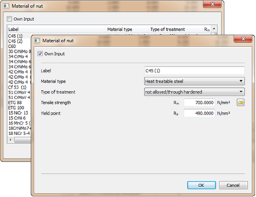

|
|
|


材料

图60.6：螺母材料输入窗口。
材料选择列表包含标准材料。
如果您已设置 标志，这里会出现一个新对话框，其中显示计算中使用的材料数据，您可以根据自己的用途进行指定。您也可以直接在数据库中定义自己的材料（参见"数据库工具和外部表"章），以便这些材料也可用于后续计算。
您只能为螺母选择这些不同的材料。对于丝杠材料，您可以选择E295（St 50.2）、E335（St 60.2）和S235（37.3）材料，因为屈曲计算仅适用于这些材料。
三种材料的强度值已固定：
- E295 (St 50.2)：Rp02 = 295 N/mm2；σzdSch = 295 N/mm2；σzdW = 195 N/mm2；λ0 = 89；τtSch = 205 N/mm2；τtW = 145 N/mm2
- E335 (St 60.2)：Rp02 = 335 N/mm2；σzdSch = 335 N/mm2；σzdW = 235 N/mm2；λ0 = 89；τtSch = 230 N/mm2；τtW = 180 N/mm2
- S235 (St 37.3)：Rp02 = 235 N/mm2；σzdSch = 225 N/mm2；σzdW = 140 N/mm2；λ0 = 105；τtSch = 160 N/mm2；τtW = 105 N/mm2
Materials
Figure 60.6: Nut materials input window.
The selection list contains materials from the standard.
If you have set the flag, a new dialog appears here. This displays the material data used in the calculation which you can specify to suit your own purposes. You can also define your own materials directly in the database (see chapter Database Tool and External Tables), so that these can also be used in subsequent calculations.
You can only select these different materials for nuts. For the spindle material you can choose E295 (St 50.2), E335 (St 60.2) and S235 (37.3) materials, because the calculation of buckling is only designed for use with these materials.
The strength values for the 3 materials have been fixed:
- E295 (St 50.2): Rp02 = 295 N/mm2; σzdSch = 295 N/mm2; σzdW = 195 N/mm2; λ0 = 89; τtSch = 205 N/mm2; τtW = 145 N/mm2
- E335 (St 60.2): Rp02 = 335 N/mm2; σzdSch = 335 N/mm2; σzdW = 235 N/mm2; λ0 = 89; τtSch = 230 N/mm2; τtW = 180 N/mm2
- S235 (St 37.3): Rp02 = 235 N/mm2; σzdSch = 225 N/mm2; σzdW = 140 N/mm2; λ0 = 105; τtSch = 160 N/mm2; τtW = 105 N/mm2